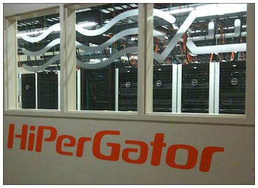
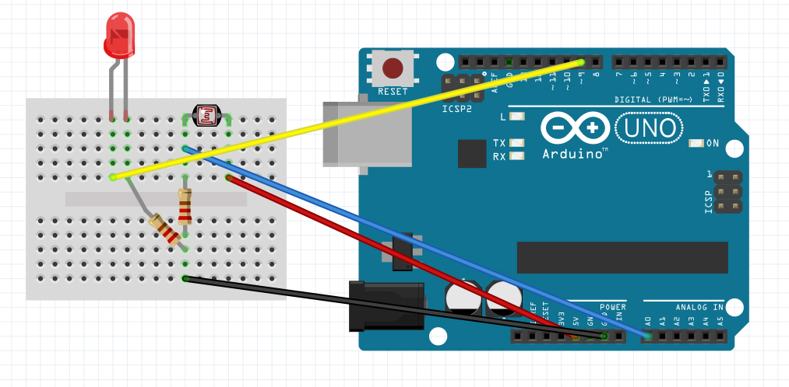

MassMine
I am the co-creator of MassMine along with Nicholas Van Horn. MassMine is a social media mining and archiving application that simplifies the process of collecting and managing large amounts of data across multiple sources. It is designed with the researcher in mind, providing a flexible framework for tackling individualized research needs. MassMine is designed to run both on personal computers and dedicated servers/clusters. MassMine is currently supported through funding from the National Endowment for the Humanities.
Writing through Big Data

Based on Gregory Ulmer’s “Writing through Media” course design for advanced writing students, I developed a course for the University of Florida called “Writing through Big Data” (WtBD). WtBD is the first humanities course at UF to use the HiPerGator supercomputer cluster in a humanities classroom (and, possibly, the first such course in the country to do so). Using MassMine, students in WtBD collected large social media data sets (networked writing) to study and write about social media trends. All of the work in the course built toward the student’s final projects where they created slideware presentations of their research and presented them to their peers through the use of infographics and basic data visualizations.
Arduino: Programming and Prototyping for Physical Computing

Along with Emily Faith, I developed an Arduino programming and prototyping training series for the Marston Science Library at the University of Florida. The training series is open to all students at UF, and provides a basic introduction to making and physical computing. The LibGuides for the training are available here, and the for Arduino code for the basic LED light sensor training is available through my GitHub page.
MLA JIL Data Analysis
Inspired by Jim Ridolfo’s work with http://www.rhetmap.org, I am curating an archive of job description data and writing studies related analyses from the MLA Jobs Information List (JIL). I am analyzing the data for word frequencies and correlations related to the terms: “rhetoric,” “composition,” “writing,” and “technical.” This project is currently “in-progress,” but all of the code and data are available through my GitHub page for the MLA JIL data project.
Connect: